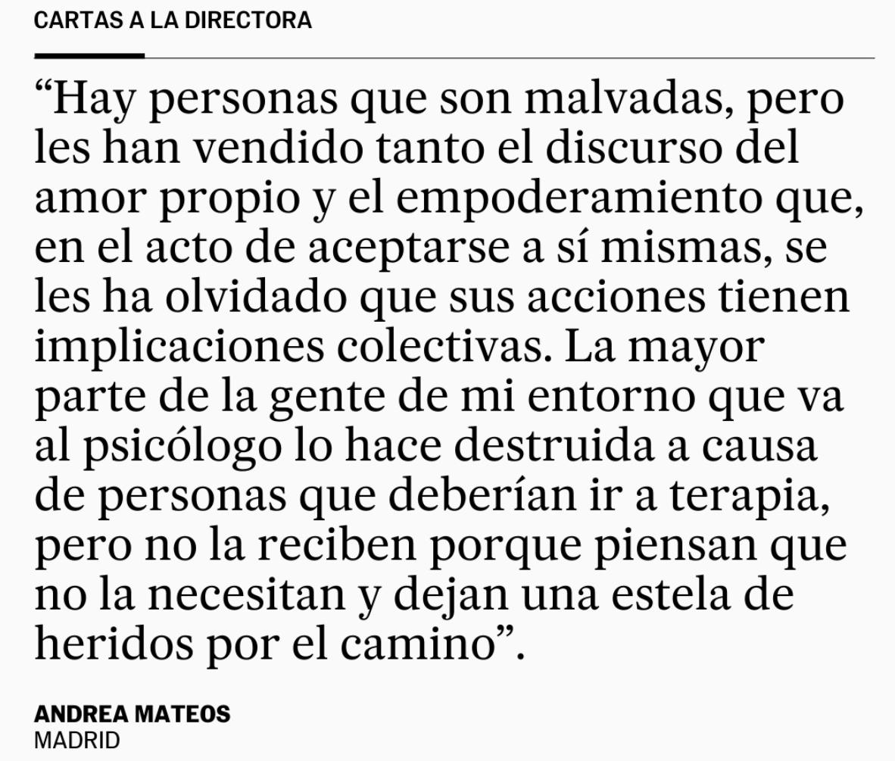

Hay personas que son malvadas pero les han vendido tanto el discurso del amor propio y el empoderamiento que, en el acto de aceptarse a sí mismas, se les ha olvidado que sus acciones tienen implicaciones externas y colectivas.
La mayor parte de mi entorno que va al psicólogo lo hace destruida a causa de personas que deberían ir a terapia, pero no la reciben porque piensan que no la necesitan y dejan una estela de heridos por el camino.
